14. 应用练习 – 第 6 版
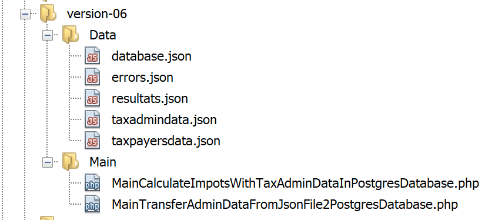
我们刚刚实现了以下分层结构：

示例中使用的数据库管理系统（DBMS）是 MySQL。在“链接”部分，我们曾指出，实现 [dao] 层的类中没有任何内容表明正在使用特定的数据库管理系统。现在，我们将通过使用另一种数据库管理系统 PostgreSQL 来验证这一点。分层架构如下所示：
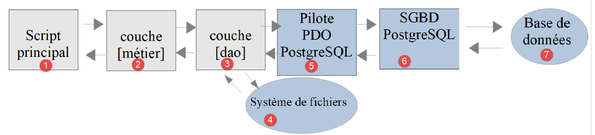
14.1. 安装 PostgreSQL 数据库管理系统
PostgreSQL 数据库管理系统（DBMS）的发行版可从 [https://www.postgresql.org/download/] 获取（2019年5月）。此处演示 64 位 Windows 版本的安装过程：

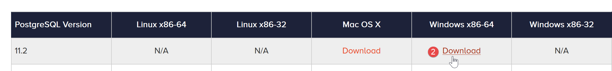
- 请访问 [1-4] 下载数据库管理系统安装程序；
运行下载的安装程序：

- 在 [6] 中，指定安装目录；
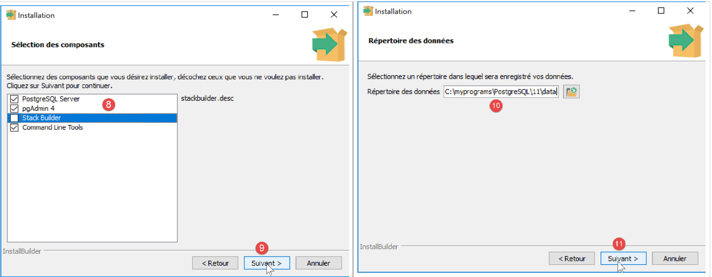
- 在 [8] 中，对于我们当前的操作，无需选择 [Stack Builder] 选项；
- 在 [10] 中，保留默认值；
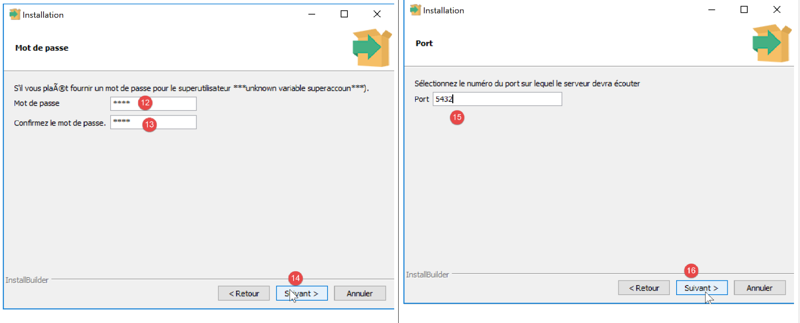
- 在 [12-13] 中，我们在此处输入了密码 [root]。这将是 DBMS 管理员（用户名为 [postgres]）的密码。PostgreSQL 也将此用户称为超级用户；
- 在 [15] 中，保留默认值：这是 DBMS 的监听端口；
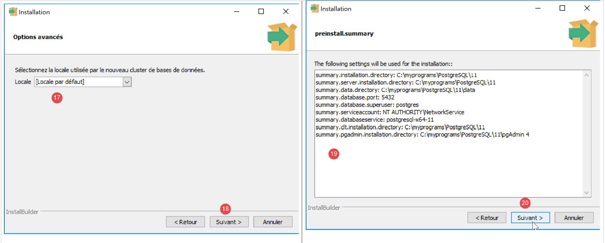
- 在 [17] 中，保留默认值；
- 在 [19] 中，显示安装配置的摘要；


在 Windows 系统中，PostgreSQL 数据库管理系统会作为 Windows 服务安装并自动启动。大多数情况下，这并非理想状态。我们将修改此配置。在 Windows 搜索栏中输入 [services] [24-26]：

- 在 [29] 中，您可以看到 PostgreSQL 数据库管理系统服务被设置为“自动”启动。通过访问服务属性 [30] 来更改此设置：

- 在 [31-32] 中，将启动类型设置为“手动”；
- 在 [33] 中，停止该服务；
当您需要手动启动数据库管理系统时，请返回 [服务] 应用程序，右键单击 [postgresql] 服务 (34)，然后启动它 (35)。
14.2. 为 PostgreSQL DBMS 启用 PDO 扩展
我们将修改用于配置 PHP 的 [php.ini] 文件（参见相关章节）：
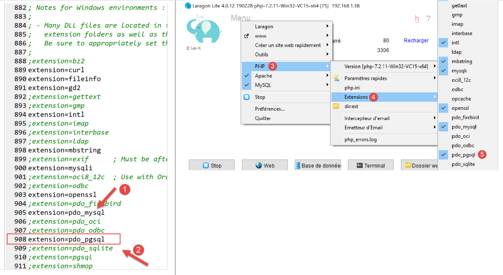
- 在 [2] 中，确认 PostgreSQL PDO 扩展已启用。完成后，保存更改并重启 Laragon 以确保更改生效。随后直接通过 Laragon 验证 PHP 配置 [3-5]。
14.3. 使用 [pgAdmin] 工具管理 PostgreSQL
启动 PostgreSQL DBMS 的 Windows 服务（参见相关章节）。接着，就像您启动 [services] 工具那样，启动 [pgadmin] 工具，该工具可用于管理 PostgreSQL DBMS [1-3]：

系统可能会在某个时候提示您输入超级用户密码。超级用户的名称为 [postgres]。您在安装数据库管理系统时设置了此密码。在本文档中，我们在安装过程中为超级用户设置了密码 [root]。
- 在 [4] 中，[pgAdmin] 是一个 Web 应用程序；
- 在 [5] 中，表示 [pgAdmin] 检测到的 PostgreSQL 服务器列表，此处为 1；
- 在 [6] 中，指我们启动的 PostgreSQL 服务器；
- 在 [7] 中，表示 DBMS 数据库，此处为 1；
- 在 [8] 中，[postgresql] 数据库由超级用户 [postgres] 管理；
首先，让我们创建一个用户 [admimpots]，密码为 [mdpimpots]：


- 在 [17] 中，我们输入了 [mdpimpots]；
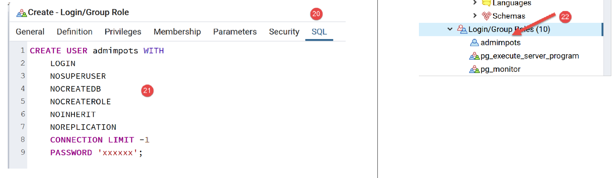
- 在 [21] 处，显示了 [pgAdmin] 工具将发送给 PostgreSQL 数据库管理系统 (DBMS) 的 SQL 代码。这是学习 PostgreSQL 专有 SQL 语言的一种方式；
- 在 [22] 中，通过 [Save] 向导确认后，用户 [admimpots] 已创建；
现在我们创建数据库 [dbimpots-2019]：

右键单击 [23]，然后依次选择 [24-25] 创建新数据库。在 [26] 选项卡中，定义数据库名称 [27] 及其所有者 [admimpots] [28]。

- 在 [30] 中，显示用于创建数据库的 SQL 代码；
- 在 [31] 中，通过 [保存] 向导确认后，数据库 [dbimpots-2019] 即创建完成；
现在，我们将创建表 [tbtranches]，其列包含 [id, limites, coeffr, coeffn]。PostgreSQL 的一个显著特点是列名区分大小写（大写/小写），而其他数据库管理系统通常并不区分大小写。 因此，在 MySQL 中，即使 [tbtranches] 表中的实际列名为 [LIMITES, COEFFR, COEFFN]，SQL 语句 [select limites, coeffR, coeffN from tbtranches] 依然有效。但在 PostgreSQL 中，该 SQL 语句将无法执行。 此时，有人可能会写成 [select LIMITES, COEFFR, COEFFN from tbtranches]，但这仍然无法运行，因为 PostgreSQL 会执行查询 [select limites, coeffr, coeffn from tbtranches]：默认情况下，它会将列名转换为小写。 为避免此问题，必须写成：[select "LIMITES", "COEFFR", "COEFFN" from tbtranches]，即必须将列名用引号括起来。基于这些原因，我们将为这些列赋予小写名称。 数据库对象的名称可能导致不同 DBMS 之间的不兼容，因为某些名称在某些 DBMS 中是保留字，而在其他 DBMS 中则不是。
我们创建表 [tbtranches]：

- 使用按钮 [40] 创建列；
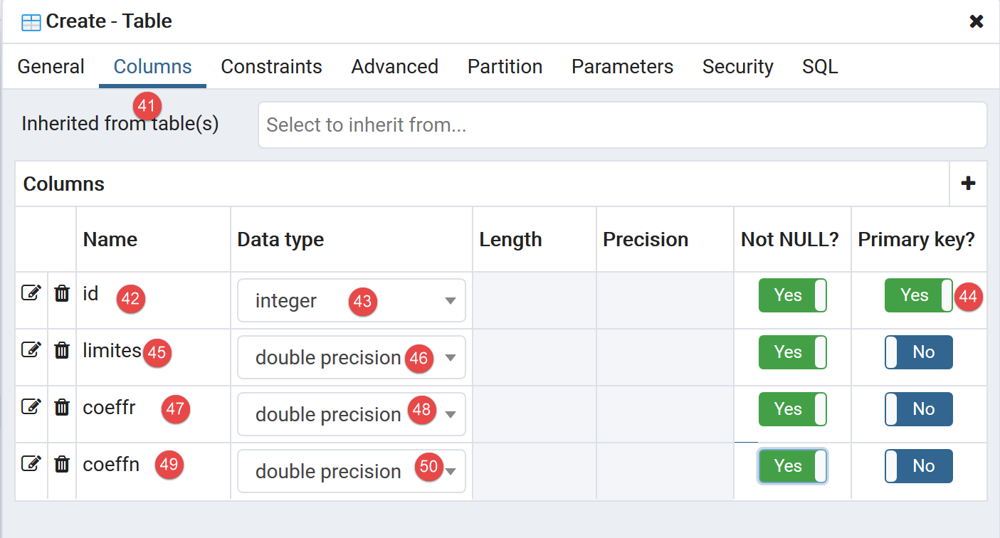

- 点击 [保存] 完成创建向导后，表 [tbtranches] 即创建完成 [52-53]；
我们需要告知数据库管理系统，在向表中插入行时，由其自动生成主键 [id]：
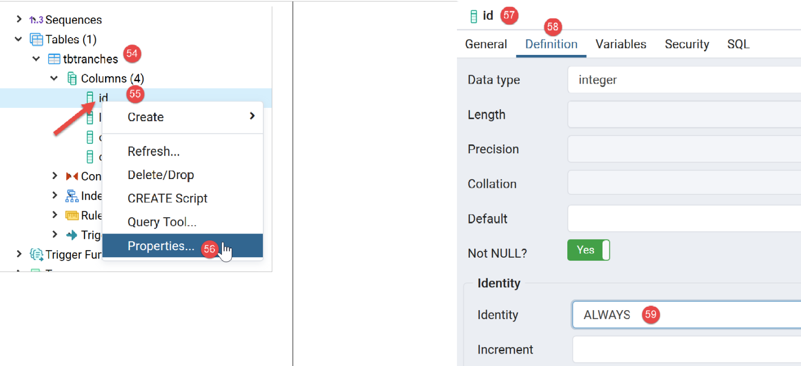
- 在 [56] 处，我们访问主键 [id] 的属性；
- 在 [59] 处，我们指定该列的类型为 [Identity]。这将导致 DBMS 自动生成主键值；

- 在[62]中，为该操作生成的SQL代码；
[tbtranches] 表现已准备就绪。
我们重复相同的步骤来创建 [tbconstantes] 表。以下是预期结果：

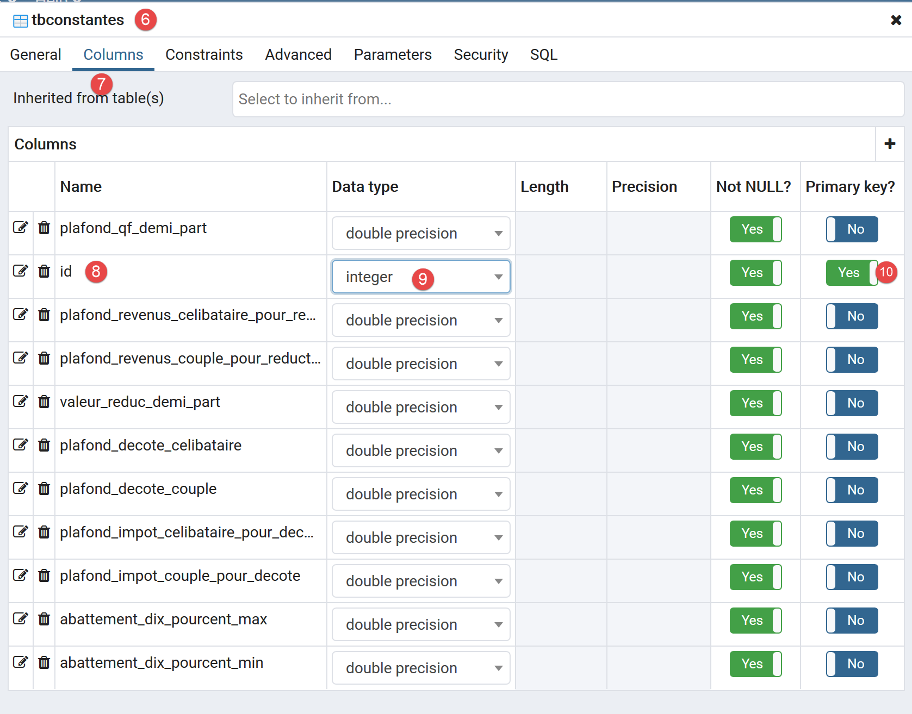

[dbimpots-2019] 数据库现已准备就绪。接下来我们将向其中导入数据。
与处理 MySQL 时一样，可以将 [dbimpots-2019] 数据库导出为 SQL 文件。如果数据库丢失或损坏，我们可以导入该 SQL 文件来重建数据库。在此，我们将仅导出数据库结构，而不导出其中的数据：


生成的文件如下：
--
-- PostgreSQL database dump
--
-- Dumped from database version 11.2
-- Dumped by pg_dump version 11.2
-- Started on 2019-07-04 08:20:31
SET statement_timeout = 0;
SET lock_timeout = 0;
SET idle_in_transaction_session_timeout = 0;
SET client_encoding = 'UTF8';
SET standard_conforming_strings = on;
SELECT pg_catalog.set_config('search_path', '', false);
SET check_function_bodies = false;
SET client_min_messages = warning;
SET row_security = off;
SET default_tablespace = '';
SET default_with_oids = false;
--
-- TOC entry 198 (class 1259 OID 16408)
-- Name: tbconstantes; Type: TABLE; Schema: public; Owner: postgres
--
CREATE TABLE public.tbconstantes (
plafond_qf_demi_part double precision NOT NULL,
id integer NOT NULL,
plafond_revenus_celibataire_pour_reduction double precision NOT NULL,
plafond_revenus_couple_pour_reduction double precision NOT NULL,
valeur_reduc_demi_part double precision NOT NULL,
plafond_decote_celibataire double precision NOT NULL,
plafond_decote_couple double precision NOT NULL,
plafond_impot_celibataire_pour_decote double precision NOT NULL,
plafond_impot_couple_pour_decote double precision NOT NULL,
abattement_dix_pourcent_max double precision NOT NULL,
abattement_dix_pourcent_min double precision NOT NULL
);
ALTER TABLE public.tbconstantes OWNER TO postgres;
--
-- TOC entry 199 (class 1259 OID 16411)
-- Name: tbconstantes_id_seq; Type: SEQUENCE; Schema: public; Owner: postgres
--
ALTER TABLE public.tbconstantes ALTER COLUMN id ADD GENERATED ALWAYS AS IDENTITY (
SEQUENCE NAME public.tbconstantes_id_seq
START WITH 1
INCREMENT BY 1
NO MINVALUE
NO MAXVALUE
CACHE 1
);
--
-- TOC entry 196 (class 1259 OID 16399)
-- Name: tbtranches; Type: TABLE; Schema: public; Owner: admimpots
--
CREATE TABLE public.tbtranches (
limites double precision NOT NULL,
id integer NOT NULL,
coeffr double precision NOT NULL,
coeffn double precision NOT NULL
);
ALTER TABLE public.tbtranches OWNER TO admimpots;
--
-- TOC entry 197 (class 1259 OID 16404)
-- Name: tbimpots_id_seq; Type: SEQUENCE; Schema: public; Owner: admimpots
--
ALTER TABLE public.tbtranches ALTER COLUMN id ADD GENERATED ALWAYS AS IDENTITY (
SEQUENCE NAME public.tbimpots_id_seq
START WITH 1
INCREMENT BY 1
NO MINVALUE
NO MAXVALUE
CACHE 1
);
--
-- TOC entry 2694 (class 2606 OID 16429)
-- Name: tbconstantes tbconstantes_pkey; Type: CONSTRAINT; Schema: public; Owner: postgres
--
ALTER TABLE ONLY public.tbconstantes
ADD CONSTRAINT tbconstantes_pkey PRIMARY KEY (id);
--
-- TOC entry 2692 (class 2606 OID 16403)
-- Name: tbtranches tbimpots_pkey; Type: CONSTRAINT; Schema: public; Owner: admimpots
--
ALTER TABLE ONLY public.tbtranches
ADD CONSTRAINT tbimpots_pkey PRIMARY KEY (id);
--
-- TOC entry 2821 (class 0 OID 0)
-- Dependencies: 198
-- Name: TABLE tbconstantes; Type: ACL; Schema: public; Owner: postgres
--
GRANT ALL ON TABLE public.tbconstantes TO admimpots;
-- Completed on 2019-07-04 08:20:32
--
-- PostgreSQL database dump complete
--
14.4. 正在填充 [tbtranches] 表
我们在链接部分中已经使用 MySQL 数据库管理系统（DBMS）完成了这一步。我们只需修改描述该数据库的 [database.json] 文件即可：
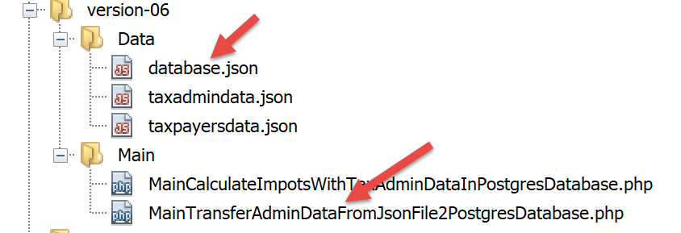
[database.json] 文件内容如下：
{
"dsn": "pgsql:host=localhost;dbname=dbimpots-2019",
"id": "admimpots",
"pwd": "mdpimpots",
"tableTranches": "public.tbtranches",
"colLimites": "limites",
"colCoeffR": "coeffr",
"colCoeffN": "coeffn",
"tableConstantes": "public.tbconstantes",
"colPlafondQfDemiPart": "plafond_qf_demi_part",
"colPlafondRevenusCelibatairePourReduction": "plafond_revenus_celibataire_pour_reduction",
"colPlafondRevenusCouplePourReduction": "plafond_revenus_couple_pour_reduction",
"colValeurReducDemiPart": "valeur_reduc_demi_part",
"colPlafondDecoteCelibataire": "plafond_decote_celibataire",
"colPlafondDecoteCouple": "plafond_decote_couple",
"colPlafondImpotCelibatairePourDecote": "plafond_impot_celibataire_pour_decote",
"colPlafondImpotCouplePourDecote": "plafond_impot_couple_pour_decote",
"colAbattementDixPourcentMax": "abattement_dix_pourcent_max",
"colAbattementDixPourcentMin": "abattement_dix_pourcent_min"
}
- 第 2 行：DSN 已更改；[pgsql] 表示我们正在处理 Postgres 数据库管理系统；
- 第 5 行和第 9 行：表名前已添加所属模式的名称 [public]。这并非绝对必要，因为当表名中未指定模式时，[public] 是默认模式；
- 第 6–8 行、第 10–19 行：列名已更改；
用于向 [dbimpots-2019] 数据库导入数据的脚本 [MainTransferAdminDataFromJsonFile2PostgresDatabase.php] 如下：
<?php
// strict adherence to declared types of function parameters
declare (strict_types=1);
// namespace
namespace Application;
// error handling by PHP
// ini_set("display_errors", "0");
// interface and class inclusion
require_once __DIR__ . "/../../version-05/Entities/BaseEntity.php";
require_once __DIR__ . "/../../version-05/Entities/TaxAdminData.php";
require_once __DIR__ . "/../../version-05/Entities/TaxPayerData.php";
require_once __DIR__ . "/../../version-05/Entities/Database.php";
require_once __DIR__ . "/../../version-05/Entities/ExceptionImpots.php";
require_once __DIR__ . "/../../version-05/Utilities/Utilitaires.php";
require_once __DIR__ . "/../../version-05/Dao/InterfaceDao.php";
require_once __DIR__ . "/../../version-05/Dao/TraitDao.php";
require_once __DIR__ . "/../../version-05/Dao/InterfaceDao4TransferAdminData2Database.php";
require_once __DIR__ . "/../../version-05/Dao/DaoTransferAdminDataFromJsonFile2Database.php";
//
// definition of constants
const DATABASE_CONFIG_FILENAME = "../Data/database.json";
const TAXADMINDATA_FILENAME = "../Data/taxadmindata.json";
//
try {
// creation of the [dao] layer
$dao = new DaoTransferAdminDataFromJsonFile2Database(DATABASE_CONFIG_FILENAME, TAXADMINDATA_FILENAME);
// data transfer to the database
$dao->transferAdminData2Database();
} catch (ExceptionImpots $ex) {
// error is displayed
print "L'erreur suivante s'est produite : " . utf8_encode($ex->getMessage()) . "\n";
}
// end
print "Terminé\n";
exit;
注释
只有第 12–21 行发生了变化，这些行负责加载运行应用程序所需的文件。之所以发生变化，是因为 [__DIR__] 的值发生了变化：它现在指向 [version-07/Main] 文件夹。
运行此脚本后，[tbtranches] 表中将得到以下结果：

- 右键单击 [1]，然后单击 [2-3]；
- 在[4]中，我们可以看到税率区间数据；
我们对常量表 [tbconstantes] 重复相同的操作：


请注意，运行该脚本时，Laragon 应用程序无需处于活动状态：既不需要 Apache 服务器，也不需要 MySQL 数据库管理系统。我们仅需 PostgreSQL 数据库管理系统，为此我们已启动了 Windows 服务。
14.5. 税费计算

[DAO] (3) 和 [业务] (2) 层已经编写完成。 我们在前文链接的章节中已编写了针对 MySQL 数据库管理系统的主脚本。我们只需将脚本 [MainCalculateImpotsWithTaxAdminDataInMySQLDatabase.php] 稍作调整，使其适配 PostgreSQL 数据库管理系统。该脚本现更名为 [MainCalculateImpotsWithTaxAdminDataInPostgresDatabase.php]：

脚本 [MainCalculateImpotsWithTaxAdminDataInPostgresDatabase.php] 内容如下：
<?php
// strict adherence to declared types of function parameters
declare (strict_types=1);
// namespace
namespace Application;
// error handling by PHP
//ini_set("display_errors", "0");
// interface and class inclusion
require_once __DIR__ . "/../../version-05/Entities/BaseEntity.php";
require_once __DIR__ . "/../../version-05/Entities/TaxAdminData.php";
require_once __DIR__ . "/../../version-05/Entities/TaxPayerData.php";
require_once __DIR__ . "/../../version-05/Entities/Database.php";
require_once __DIR__ . "/../../version-05/Entities/ExceptionImpots.php";
require_once __DIR__ . "/../../version-05/Utilities/Utilitaires.php";
require_once __DIR__ . "/../../version-05/Dao/InterfaceDao.php";
require_once __DIR__ . "/../../version-05/Dao/TraitDao.php";
require_once __DIR__ . "/../../version-05/Dao/DaoImpotsWithTaxAdminDataInDatabase.php";
require_once __DIR__ . "/../../version-05/Métier/InterfaceMetier.php";
require_once __DIR__ . "/../../version-05/Métier/Metier.php";
//
// definition of constants
const DATABASE_CONFIG_FILENAME = "../Data/database.json";
const TAXADMINDATA_FILENAME = "../Data/taxadmindata.json";
const RESULTS_FILENAME = "../Data/resultats.json";
const ERRORS_FILENAME = "../Data/errors.json";
const TAXPAYERSDATA_FILENAME = "../Data/taxpayersdata.json";
try {
// creation of the [dao] layer
$dao = new DaoImpotsWithTaxAdminDataInDatabase(DATABASE_CONFIG_FILENAME);
// creation of the [business] layer
$métier = new Metier($dao);
// tax calculation in batch mode
$métier->executeBatchImpots(TAXPAYERSDATA_FILENAME, RESULTS_FILENAME, ERRORS_FILENAME);
} catch (ExceptionImpots $ex) {
// error is displayed
print "Une erreur s'est produite : " . utf8_encode($ex->getMessage()) . "\n";
}
// end
print "Terminé\n";
exit;
注释
只有第 12–22 行发生了变化，这些行负责加载运行应用程序所需的文件。之所以发生变化，是因为 [__DIR__] 的值发生了变化：它现在指向 [version-07/Main] 文件夹。
执行结果
与之前版本中获得的结果相同。
14.6. [Codeception] 测试
与之前版本一样，我们使用 [Codeception] 测试对本版本进行验证：

14.6.1. [DAO] 层测试
[DaoTest.php] 测试内容如下：
<?php
// strict adherence to declared types of function parameters
declare (strict_types=1);
// namespace
namespace Application;
// root directories
define("ROOT", "C:/Data/st-2019/dev/php7/poly/scripts-console/impots/version-06");
define("VENDOR", "C:/myprograms/laragon-lite/www/vendor");
// interface and class inclusion
require_once ROOT . "/../version-05/Entities/BaseEntity.php";
require_once ROOT . "/../version-05/Entities/TaxAdminData.php";
require_once ROOT . "/../version-05/Entities/TaxPayerData.php";
require_once ROOT . "/../version-05/Entities/Database.php";
require_once ROOT . "/../version-05/Entities/ExceptionImpots.php";
require_once ROOT . "/../version-05/Utilities/Utilitaires.php";
require_once ROOT . "/../version-05/Dao/InterfaceDao.php";
require_once ROOT . "/../version-05/Dao/TraitDao.php";
require_once ROOT . "/../version-05/Dao/DaoImpotsWithTaxAdminDataInDatabase.php";
// third-party libraries
require_once VENDOR . "/autoload.php";
// definition of constants
const DATABASE_CONFIG_FILENAME = ROOT ."../Data/database.json";
class DaoTest extends \Codeception\Test\Unit {
// TaxAdminData
private $taxAdminData;
public function __construct() {
parent::__construct();
// creation of the [dao] layer
$dao = new DaoImpotsWithTaxAdminDataInDatabase(DATABASE_CONFIG_FILENAME);
$this->taxAdminData = $dao->getTaxAdminData();
}
// tests
public function testTaxAdminData() {
…
}
}
评论
- 第 9–28 行：测试环境的定义。我们使用与链接部分中描述的主脚本 [MainCalculateImpotsWithTaxAdminDataInPostgresDatabase] 相同的环境，但不包含 [business] 层；
- 第 34–39 行：构建 [dao] 层；
- 第 38 行：[$this→taxAdminData] 属性包含待测试的数据；
- 第 42–44 行：[testTaxAdminData] 方法即链接部分中所述的方法；
测试结果如下：

14.6.2. 测试 [business] 层
[MetierTest.php] 的测试内容如下：
<?php
// strict adherence to declared types of function parameters
declare (strict_types=1);
// namespace
namespace Application;
// root directories
define("ROOT", "C:/Data/st-2019/dev/php7/poly/scripts-console/impots/version-06");
define("VENDOR", "C:/myprograms/laragon-lite/www/vendor");
// interface and class inclusion
require_once ROOT . "/../version-05/Entities/BaseEntity.php";
require_once ROOT . "/../version-05/Entities/TaxAdminData.php";
require_once ROOT . "/../version-05/Entities/TaxPayerData.php";
require_once ROOT . "/../version-05/Entities/Database.php";
require_once ROOT . "/../version-05/Entities/ExceptionImpots.php";
require_once ROOT . "/../version-05/Utilities/Utilitaires.php";
require_once ROOT . "/../version-05/Dao/InterfaceDao.php";
require_once ROOT . "/../version-05/Dao/TraitDao.php";
require_once ROOT . "/../version-05/Dao/DaoImpotsWithTaxAdminDataInDatabase.php";
require_once ROOT . "/../version-05/Métier/InterfaceMetier.php";
require_once ROOT . "/../version-05/Métier/Metier.php";
// third-party libraries
require_once VENDOR . "/autoload.php";
// definition of constants
const DATABASE_CONFIG_FILENAME = ROOT . "../Data/database.json";
class MetierTest extends \Codeception\Test\Unit {
// business layer
private $métier;
public function __construct() {
parent::__construct();
// creation of the [dao] layer
$dao = new DaoImpotsWithTaxAdminDataInDatabase(DATABASE_CONFIG_FILENAME);
// creation of the [business] layer
$this->métier = new Metier($dao);
}
// tests
public function test1() {
…
}
--------------------------------------------------------------------
public function test11() {
…
}
}
评论
- 第9–28行：测试环境的定义。我们使用与链接部分中描述的主脚本[MainCalculateImpotsWithTaxAdminDataInPostgresDatabase]相同的环境；
- 第34–40行：构建[dao]和[business]层；
- 第 39 行：属性 [$this→business] 引用 [business] 层
- 第 43–49 行：方法 [test1, test2…, test11] 即链接部分中所述的方法；
测试结果如下：